The central architectural feature of biological membranes is a double layer of lipids, which constitutes a barrier to the passage of polar molecules and ions. Membrane lipids are amphipathic; the orientation of their hydrophobic and hydrophilic regions directs their packing into membrane bilayers. Three general types of membrane lipids will be described:glycerophospholipids, in which the hydrophobic regions are composed of two fatty acids joined to glycerol; sphingolipids, in which a single fatty acid is joined to a fatty amine, sphingosine; and sterols, compounds characterized by a rigid system of four fused hydrocarbon rings. The hydrophilic moieties in these amphipathic compounds may be as simple as a single -OH group at one end of the sterol ring system, or they may be more complex. Glycerophospholipids and sphingolipids contain polar or charged alcohols at their polar ends; some also contain phosphate groups (Fig. 9-6). Within these three classes of membrane lipids, enormous diversity results from various combinations of fatty acid "tails" and polar "heads." We describe here a representative sample of the types of membrane lipids found in living organisms. The arrangement of these lipids in membranes, and their structural and functional roles therein, are considered in the next chapter.
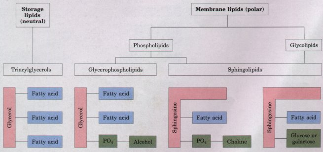
Figure 9-6 The principal classes of storage and membrane lipids. All of the classes shown here have either glycerol or sphingosine as the backbone. A third class of membrane lipids, the sterols, is described later (see Fig. 9-13).
Membranes contain several classes of lipids in which two fatty acids are ester-linked to glycerol at C-1 and C-2, and a highly polar or charged (and therefore hydrophilic) head group is attached to C-3 (Fig. 9-6). The most abundant of these polar lipids in most membranes are the glycerophospholipids, sometimes called phosphoglycerides (Fig. 9-7). In glycerophospholipids, a polar alcohol is joined to C-3 of glycerol through a phosphodiester bond. All glycerophospholipids are derivatives of phosphatidic acid (Fig. 9-7) and are named for their polar head groups (phosphatidylcholine and phosphatidylethanolamine, for example). All have a negative charge on the phosphate group at pH 7.0. The head-group alcohol may also contribute one or more charges at pH near 7.
The fatty acids in glycerophospholipids can be any of a wide variety. They are different in different species, in different tissues of the same species, and in different types of glycerophospholipids in the same cell or tissue. In general, glycerophospholipids contain a saturated fatty acid at C-1 and an unsaturated fatty acid at C-2, and the fatty acyl groups are commonly 16 or 18 carbons long-but there are many exceptions.
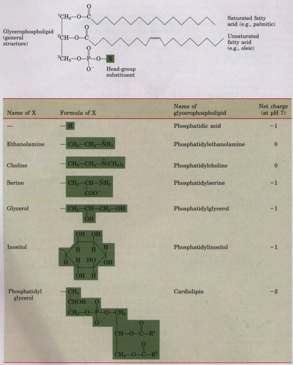
Some animal tissues and some unicellular organisms are rich in ether lipids, in which one of the two acyl chains is attached to glycerol in ether, rather than ester, linkage. The ether-linked chain may be saturated, as in the alkyl ether lipids, or may contain a double bond between C-1 and C-2, as in plasmalogens (Fig. 9-8). Vertebrate heart tissue is uniquely enriched in ether lipids; about half of the heart phospholipids are plasmalogens. The membranes of halophilic bacteria, of ciliated protists, and of certain invertebrates also contain high proportions of ether lipids. Their functional significance in these membranes is unknown; perhaps they confer resistance to phospholipases that cleave ester-linked fatty acids from membrane lipids. At least one ether lipid, platelet-activating factor (Fig. 9-8), is an important hormone. It is released from white blood cells called basophils and stimulates platelet aggregation and the release of serotonin from platelets. It exerts a variety of effects on liver, smooth muscle, heart, uterine, and lung tissues, and plays an important role in inflammation and the allergic response.
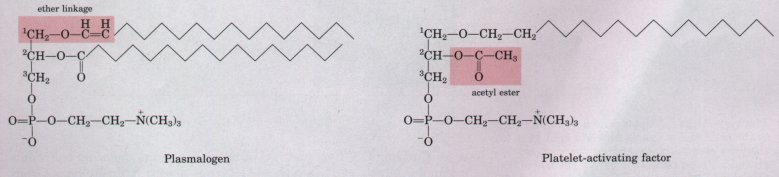
Figure 9-8 Plasmalogens and platelet-activating factor. Plasmalogens have one ether-linked alkenyl chain where most glycerophospholipids have an ester-linked fatty acid (compare Fig. 9-7). Plateletactivating factor has a long ether-linked alkyl chain at C-1 of glycerol, but C-2 is ester-linked to a very short fatty acid (acetic acid), which makes the compound much more water-soluble than most glycerophospholipids and plasmalogens. The head group alcohol is choline in plasmalogens and plateletactivating factor.
Sphingolipids, the second large class of membrane lipids, also have a polar head and two nonpolar tails, but unlike glycerophospholipids they contain no glycerol. Sphingolipids are composed of one molecule of the long-chain amino alcohol sphingosine (4-sphingenine) or one of its derivatives, one molecule of a long-chain fatty acid, a polar head alcohol, and sometimes phosphoric acid in diester linkage at the polar head group (Fig. 9-9).
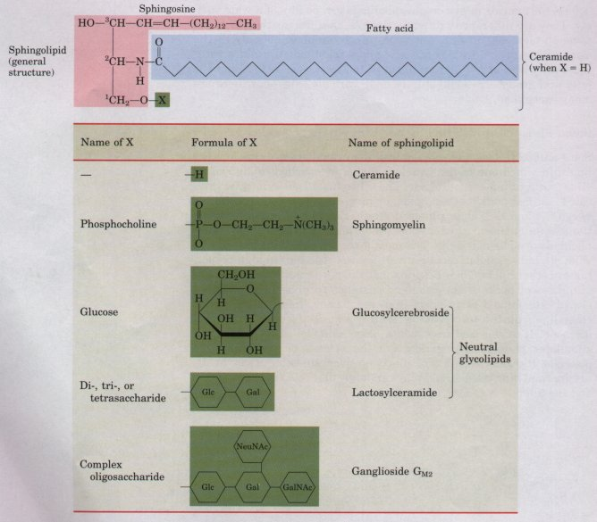
Figure 9-9 Sphingolipids. The first three carbons at the polar end of sphingosine are analogous to the three carbons of glycerol in glycerophospholipids. In ceramide, the parent compound for this group, the amino group at C-2 bears a fatty acid in amide linkage. Individual sphingolipids dif fer in the polar head group (X); attached at C-l. The fatty acid components of sphingolipids are usually saturated or monounsaturated, and contain 16, 18, 22, or 24 carbon atoms. Gangliosides have very complex oligosaccharide head groups. These compounds are given identifying symbols (e.g., GM1, GM2,) that indicate the structure of the head group. At least 15 different classes of gangliosides have been found in higher animals. Standard symbols for sugars are used in this figure: Glc, D-glucose; Gal, D-galactose; GalNAc, N-acetyl-n-galactosamine; NeuNAc, N-acetylneuraminic acid (sialic acid).
Carbons C-l, C-2, and C-3 of the sphingosine molecule bear functional groups (-OH, -NH2, -OH) that are structurally homologous with the three hydroxyl groups of glycerol in glycerophospholipids. When a fatty acid is attached in amide linkage to the -NH2, the resulting compound is a eeramide (Fig. 9-9), which is structurally similar to a diacylglycerol. Ceramide is the fundamental structural unit common to all sphingolipids.
There are three subclasses of sphingolipids, all derivatives of ceramide, but differing in their head groups: sphingomyelins, neutral (uncharged) glycolipids, and gangliosides (Fig. 9-9). Sphingomyelins contain phosphocholine or phosphoethanolamine as their polar head group, and are therefore classified as phospholipids, together with glycerophospholipids. Indeed, sphingomyelins resemble phosphatidylcholines in their general properties and three-dimensional structure, and in having no net charge on their head groups (Fig. 9-10). Sphingomyelins are present in plasma membranes of animal cells; the myelin sheath which surrounds and insulates the axons of myelinated neurons is a good source of sphingomyelins, and gives them their name.
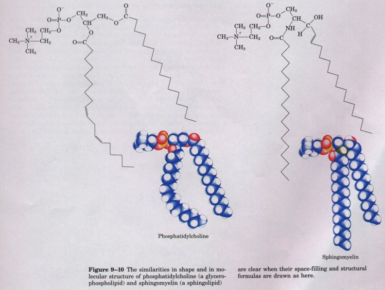
Neutral glycolipids and gangliosides have one or more sugars in their head group, connected directly to the -OH at C-1 of the ceramide moiety; they do not contain phosphate. These sugar-containing sphingolipids are sometimes called glycosphingolipids. Neutral glycolipids contain one to six (sometimes more) sugar units, which may be n-glucose, n-galactose, or N-acetyl-n-galactosamine (Fig. 9-9). These glycosphingolipids occur largely in the outer face of the plasma membrane. Cerebrosides have a single sugar linked to ceramide (Fig. 9-9); those with galactose are characteristically found in the plasma membranes of cells in neural tissue, and those with glucose, in the plasma membranes of cells in nonneural tissues.
| Gangliosides, the most complex sphingolipids (Fig. 9-9), contain very large polar heads made up of several sugar units. One or more of the terminal sugar units of gangliosides is N-acetylneuraminic acid, also called sialic acid, which has a negative charge at pH 7. Gangliosides make up about 6% of the membrane lipids in the gray matter of the human brain, and they are present in lesser amounts in the membranes of most nonneural animal tissues. | 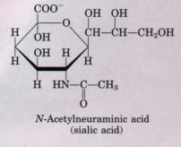 |
When the sphingolipids were discovered a century ago by the physician-chemist Johann Thudicum, their biological role seemed as enigmatic as the Sphinx, for which he named them. Sphingolipids are now known to be involved in various recognition events at the cell surface. For example, glycosphingolipids are the determinants of the human blood groups A, B, and O (Fig. 9-11). The ganglioside GM1, which doubtless plays some role of value to the animal cell that contains it, is the point of attachment of cholera toxin as it attacks an animal cell, a case of coevolution of a host cell and its pathogenic parasite. The membranes of the human nervous system contain at least 15 different gangliosides for which no function is yet known. However, it is clearly important that the synthesis and breakdown of these compounds be tightly regulated; derangements in the metabolism of cerebrosides and gangliosides underlie the devastating effects of several human genetic diseases, including Tay-Sachs and Niemann-Pick diseases (Box 9-2). |
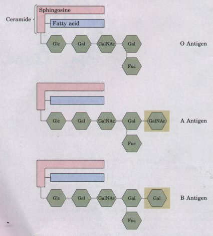 Figure 9-11 The human blood groups (O, A, B) are determined in part by the sugar head groups in these glycosphingolipids. The same three types of complex sugar groups are also found attached to certain blood proteins of individuals of blood types O, A, and B, respectively. The symbol Fuc represents the sugar fucose. |
B O X 9-2 Some Inherited Human Diseases Resulting from Abnormal Accumulations of Membrane Lipids
Tay-Sachs disease is rare in the population at large (1 in 300,000 births) but has a very high incidence (1 in 3,600 births) in Ashkenazic Jews (those of Eastern European extraction), who make up more than 90% of the Jewish population of the United States. One in 28 Ashkenazic Jews carries the defective gene in recessive form, which means that when both parents are carriers, there is a one in four probability that a child will develop TaySachs disease. Genetic counseling of parents has become important in averting the occurrence of this disease. Tests have been devised to determine the presence of the recessive gene in prospective parents. These tests involve measuring the level of hexosaminidase A in skin cells. Carriers of the defective gene have a reduced (but for these individuals, functional) level of the enzyme. Tests of the fetus can also be made during pregnancy by taking a sample of amniotic fluid, the fluid surrounding the growing fetus, in a process known as amniocentesis. The activity of hexosaminidase A can be measured in fetal cells contained in this fluid. |
Most cells continually degrade and replace their membrane lipids. For each of the bonds in a glycerophospholipid, there is a specific hydrolytic enzyme (Fig. 9-12). Phospholipases of the A type remove one of the two fatty acids, producing a lysophospholipid; these esterases do not attack the ether link in plasmalogens. Lysophospholipases remove the remaining fatty acid. Phospholipid breakdown is part of at least two signaling processes in animal cells. Extracellular signals (certain hormones, for example) activate a phospholipase C that specifically cleaves phosphatidylinositols, releasing diacylglycerol and inositol phosphates, which serve as intracellular signals. Other extracellular stimuli activate a phospholipase A that releases arachidonic acid from membrane lipids; arachidonate serves as a precursor in the synthesis of one of the eicosanoids that act as intracellular messengers. These messenger roles for lipids are discussed later in this chapter. |
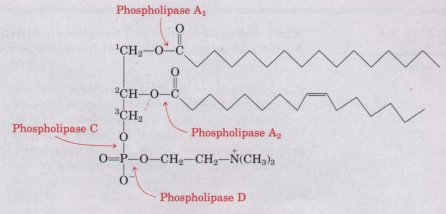 Figure 9-12 The specificities of phospholipases. Phospholipases A1, and A2 hydrolyze the ester bonds of intact glycerophospholipids at C-1 and C-2 of glycerol, respectively. Phospholipases C and D each split one of the phosphodiester bonds in the head group, as indicated. Some phospholipases act only on one type of glycerophospholipid, such as phosphatidylinositol or phosphatidylcholine; others are less specific. When one of the fatty acids has been removed by a type-A phospholipase, the second fatty acid is cleaved from the molecule by a lysophospholipase |
Sterols are structural lipids present in the membranes of most eukaryotic cells. Their characteristic structure is the steroid nucleus consisting of four fused rings, three with six carbons and one with five (Fig. 9-13). The steroid nucleus is almost planar, and relatively rigid; the fused rings do not allow rotation about C-C bonds. Cholesterol, the major sterol in animal tissues, is amphipathic, with a polar head group (the hydroxyl group at C-3) and a nonpolar hydrocarbon body (the steroid nucleus and the hydrocarbon side chain at C-17) about as long as a 16-carbon fatty acid in its extended form. Similar sterols are found in other eukaryotes: stigmasterol in plants and ergosterol in fungi, for example. With rare exceptions, bacteria lack sterols. The sterols of all species are synthesized from simple five-carbon isoprene subunits (as are the fat-soluble vitamins, quinones, and dolichols described below). |
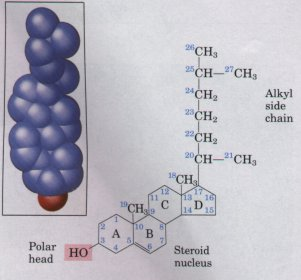 Figure 9-13 Cholesterol. To simplify reference to derivatives of the steroid nucleus, the rings are labeled A through D and the carbon atoms are numbered (in blue) as shown. The hydroxyl group on C-3 represents the polar head group. For storage and transport of the sterol, this hydroxyl group condenses with a fatty acid to form a sterol ester. |
In addition to their roles as membrane constituents, the sterols serve as precursors for a variety of products with specific biological activities. Bile acids, in which the side chain at C-17 is hydrophilic, act as detergents in the intestine, emulsifying dietary fats to make them more readily accessible to digestive lipases. A variety of steroid hormones (described below) are also produced from cholesterol by oxidation of the side chain at C-17. |
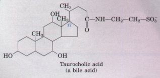 |
On receiving the Nobel Prize in 1985 for their work on cholesterol metabolism, Michael Brown and Joseph Goldstein recounted in their lecture the extraordinary history of cholesterol:
Cholesterol is the most highly decorated small molecule in biology. Thirteen Nobel Prizes have been awarded to scientists who devoted major parts of their careers to cholesterol. Ever since it was isolated from gallstones in 1784, cholesterol has exerted an almost hypnotic fascination for scientists from the most diverse areas of science and medicine.
We shall return to cholesterol later, to consider its role in biological membranes, its remarkable biosynthetic pathway, and its role as precursor to the steroid hormones.
We have noted that glycerophospholipids, sphingolipids, and sterols are virtually insoluble in water. When mixed with water, these amphipathic compounds form microscopic lipid aggregates in a phase separate from their aqueous surroundings. Lipid molecules cluster together with their hydrophobic moieties in contact with each other and their hydrophilic groups interacting with the surrounding water. Recall that lipid clustering reduces the amount of hydrophobic surface exposed to water and thus minimizes the number of molecules in the shell of ordered water at the lipid-water interface (see Fig. 4-7), resulting in an increase in entropy. Hydrophobic interactions among lipid molecules provide the thermodynamic driving force for the formation and maintenance of these structures.
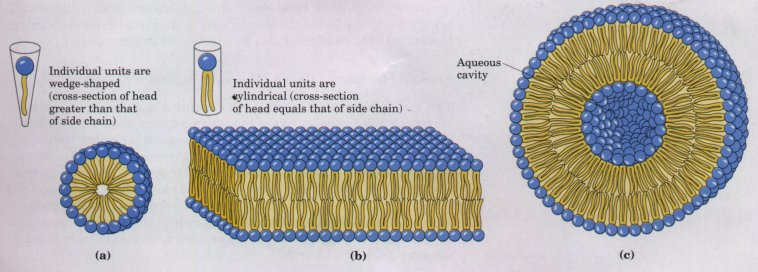
Figure 9-14 Amphipathic lipid aggregates that form in water. (a) In spherical micelles, the hydrophobic chains of the fatty acids are sequestered at the core of the sphere. There is virtually no water in the hydrophobic interior of the micelle. (b) In a bilayer, all acyl side chains except those at the edges of the sheet are protected from interaction with water. (c) When an extensive two-dimensional bilayer folds on itself, it forms a liposome, a threedimensional hollow vesicle enclosing an aqueous cavity.
Depending on the precise conditions and the nature of the lipids used, three types of lipid aggregates can form when amphipathic lipids are mixed with water (Fig. 9-14). Micelles are relatively small, spherical structures involving a few dozen to a few thousand molecules arranged so that their hydrophobic regions aggregate in the interior, excluding water, and their hydrophilic head groups are at the surface, in contact with water. Micelle formation is favored when the crosssectional area of the head group is greater than that of the acyl side chain(s) (Fig. 9-14a), as it is in free fatty acids, lysophospholipids (which lack one fatty acid), and the detergent SDS.
A second type of lipid aggregate in water is the bilayer, in which two lipid monolayers combine to form a two-dimensional sheet. Bilayer formation occurs most readily when the cross-sectional areas of the head group and side chain(s) are similar (Fig. 9-14b), as in glycerophospholipids and sphingolipids. The hydrophobic portions in each monolayer interact, excluding water. The hydrophilic head groups interact with water at the two surfaces of the bilayer.
The third type of lipid aggregate is formed when a lipid bilayer folds back on itself to form a hollow sphere called a liposome or vesicle (Fig. 9-14c). By forming vesicles, bilayer sheets lose their hydrophobic edge regions, achieving maximal stability in their aqueous environment. These bilayer vesicles enclose water, creating a separate aqueous compartment. It is likely that the first living cells resembled liposomes, their aqueous contents segregated from the rest of the world by a hydrophobic shell. We shall see in the next chapter that lipid bilayers are fundamental to the structure of all biological membranes.